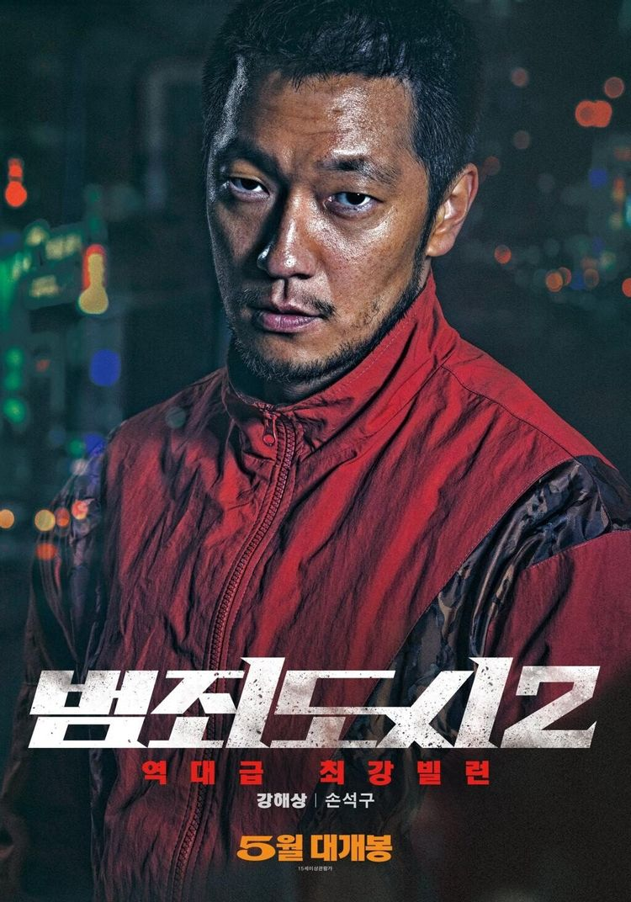
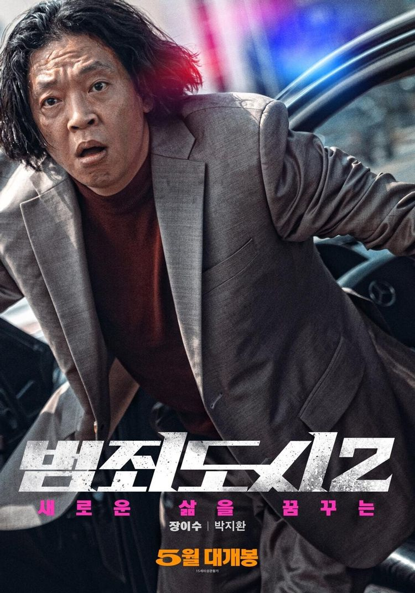
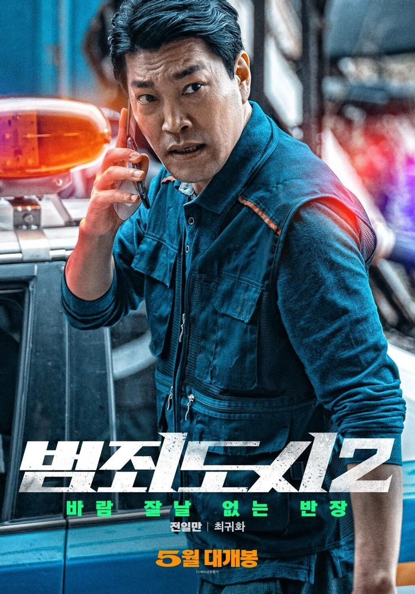

2008년 베트남 호치민시. 젊은 한국인 남성 최용기는 현지에 사는 한국인 브로커와 함께 빈 공터에 방문하여 땅을 둘러보며 이 부지에 리조트를 세울 계획을 한다. 그때 낡은 봉고차 한 대가 나타나고, 브로커는 꼭 만나봐야 할 렌터카 사업자라며 소개한다. 브로커의 안내로 봉고차에 탑승한 최용기는 강해상이 먹고있던 과자를 뺏어 먹으며, 사업 이야기를 꺼내지만, 앞에 앉은 강해상은 그런 최용기를 비웃는다. 그리고 강해상의 파트너인 두익이 무자비하게 최용기를 구타해버린다. 사실 리조트 사업은 최용기를 유인할 핑계였고, 그들의 목적은 최용기를 납치해 돈을 뜯어내는 것이었다. 그렇게 납치에 성공한 강도단. 하지만 강해상 쪽과 세 명의 강도단 사이에 기싸움으로 언쟁이 커지고[4] 차를 운전하던 기백이 급브레이크까지 밟은 뒤 강해상을 위협하는 찰나, 틈을 노린 최용기가 차문을 열고 튀어나가 도주해버린다. 이에 싸움을 잠시 멈추고 종훈, 종두, 기백이 쏜살같이 최용기를 쫓아 갈대밭 한복판에서 겨우 붙잡는 데 성공한다. 이에 최용기는 자신이 머무는 숙소에 현금 5억은 물론 금괴까지 있다면서 보내만 주면 다 주겠다고 협상을 시도한다. 거금에 희희낙락한 강도단. 하지만 뒤따라온 강해상이 최용기를 칼로 무자비하게 난도질하여 살해한다. 이에 기백이 미쳤냐며 돈은 받고 죽여야 하지 않느냐 따지는 순간, 뒤로 다가온 두익이 그대로 기백의 목을 따버린다.[5] 기백처럼 격하게는 아니더라도 나름 반발했던 나머지 두 명은 깜짝 놀라 벌벌 떨며 아무 말도 하지 못한다. 이에 강해상은 숨을 고르고는 돈 나눌 머리 수가 줄었으니 너희도 좋지 않냐며 아무렇지 않게 웃는다. 장소가 바뀌어 서울시 금천구. 한 슈퍼마켓에서 정신병자가 식칼을 들고 인질극을 벌인다. 이에 강력반 형사들이 그를 달래며 협상하던 중, 마석도가 소개팅 차림 그대로 나타난다. 범인은 심히 흥분하여 협상이 불가한 상황. 이에 형사들이 시선을 끄는 동안 석도가 슈퍼 뒷문으로 몰래 들어간다. 하지만 워낙 거대한 몸이라 판매대를 넘어뜨려 들키고, 격투 끝에 범인을 제압한다. 그러나 흥분하여 범인의 얼굴을 심하게 가격, 전치 12주의 부상을 입힌 게 신문에 대서특필되어 경찰의 과잉 진압으로 논란이 되지만 다행히 큰 징계는 없이 지나간다. 그 후 석도와 전일만은 금천구에서 활동했던 금은방 강도단 삼인방 중 한 명인 종훈이 베트남에서 자수했다는 소식을 듣고 그를 한국으로 이송하기 위해 베트남에 출장을 가게 된다. 베트남에 도착한 석도와 일만. 하지만 베테랑 형사인 두 사람은 종훈의 자수를 두고 말도 안된다고 웃으면서 종훈이 무언가 숨기고 있음을 직감한다. 종훈은 양심의 가책을 느껴 자수했다는 소리만 해대지만 석도의 폭력적인 취조에 무슨 일을 겪었는지 불게 된다. 납치사건에 함께 했던 종두의 주소를 알아내 확인하러간 일만과 석도는 이미 죽어있는 종두를 발견하고 종훈을 다시 추궁한다. 잠시 과거로 돌아가 최용기와 기백이 죽은 직후의 시점. 종훈은 종두와 함께 기택과 용기의 시체를 어느 집 마당에 묻는다. 강해상은 용기의 호텔방에서 가져온 돈을 보고 더 뜯어낼 수 있을 것 같다며 용기의 오른팔을 자르고 여권과 함께 찍은 뒤, 용기의 아버지에게 사진과 함께 5억을 송금하면 아들을 집으로 돌려 보내주겠다는 문자를 보낸다. 그후 다시 현재로 돌아와 종훈은 일이 끝나자 종두와 함께 강해상을 피해 베트남내에 잠적하자 어느 순간부터 자신들을 누군가 감시한다는걸 직감했으며 베트남에 있다간 죽겠다는 생각이 들어 영사관에 자수하러 온 것이었다. 박창수는 한국으로 송환시켜 달라고 싹싹비는 종훈을 보고 단단히 빡쳐서 불법이지만 자체적으로 강해상의 흔적을 쫒으려는 일만과 석도를 만류해보지만 들을리가 없었고 그들은 본격적으로 강해상의 흔적을 쫒기로 한다.